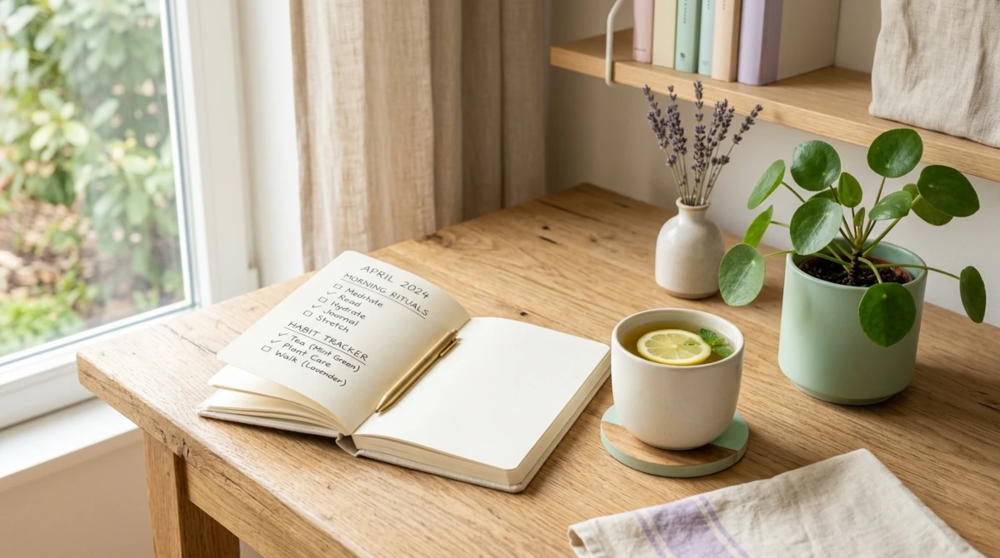

El método de las Vitaminas y Drenadores: gestiona tu energía
Son las seis de la tarde, aún te quedan tareas pendientes, pero sientes que tu batería interna está al 1%. Descubre por qué gestionar el tiempo no basta si no aprendes a cuidar tu energía diaria.

Miras tu agenda, ves que solo has trabajado cuatro o cinco horas y no entiendes por qué te sientes completamente exhausto.
A todos nos ha pasado. Nos han enseñado a organizar el día en bloques de horas, pero nos olvidamos de algo fundamental: no todas las horas pesan lo mismo.
La verdadera clave de la productividad personal y del bienestar cotidiano no está en exprimir cada minuto del reloj, sino en saber gestionar la energía que te queda.
1. ¿Qué son las Vitaminas y los Drenadores cotidianos?
Imagina que tu batería interna se recarga o se vacía según las actividades que realizas a lo largo de la jornada. Para equilibrar tu día, conviene clasificar tus hábitos en dos grandes grupos:
- ☀️ Actividades "Vitamina": Son aquellos momentos que te devuelven la vitalidad, despejan tu mente o te aportan satisfacción. Puede ser dar un paseo de diez minutos, tomar café tranquilo sin pantallas o charlar con un amigo.
- 🔋 Actividades "Drenador": Son aquellas tareas que agotan rápidamente tu batería o te generan sobrecarga. Puede ser responder una cadena interminable de mensajes, hacer trámites farragosos o multitarea sin pausas.
2. Tres pasos para mapear tu balance de energía diario
Paso 1: Identifica tus fugas de vitalidad
Durante los próximos tres días, observa cómo te sientes al terminar cada actividad. No se trata de eliminar todos los "drenadores" (muchas veces son tareas obligatorias), sino de ser consciente de qué cosas te vacían.
Paso 2: Distribuye tus dosis de "Vitaminas"
Si sabes que vas a tener una mañana llena de reuniones pesadas o trámites complejos (drenador), planifica justo después un pequeño bloque de diez minutos de descanso activo (vitamina). Compensa las cargas para evitar llegar fundido al final de la jornada.
Paso 3: Registra tu balance al cerrar el día
Dedica medio minuto cada noche a revisar si tu día ha tenido suficiente balance o si los drenadores ganaron la partida. Esta simple toma de conciencia te permitirá ajustar tus horarios mañana.
"Organizar tu tiempo es útil; organizar tu energía es lo que transforma la calidad de tu día a día."
3. Meowy: Descubre de forma automática qué hábitos te suman y cuáles te restan
Descubrir qué actividades te aportan calma o sobrecarga no tiene por qué requerir complicadas hojas de cálculo. Meowy cuenta con un motor de analíticas locales diseñado para mapear tu equilibrio diario sin esfuerzo.
Simplemente registras cómo te sientes en segundos y marcas las actividades del día. De forma 100% privada en tu móvil, Meowy se encarga de:
- Identificar tus Vitaminas (+): Destaca los hábitos que coinciden de forma consistente con tus momentos de mejor humor.
- Mapear tus Drenadores (-): Te muestra de forma visual qué rutinas o contextos suelen generar bajones de energía.
- Mostrarte tu mapa de calor mensual: Para que observes tu evolución y comprendas tus ritmos a golpe de vista.
Empieza a gestionar tu energía con claridad
Descubre tus rutinas vitamina, equilibra tu día a día y cuida tu bienestar con Meowy.